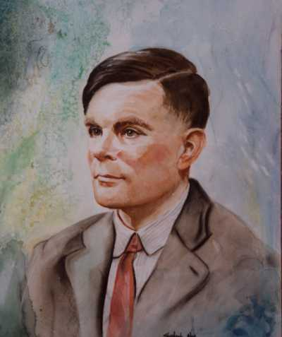

El Padre de la Computación
One day ladies will take their computers for walks in the park and tell each other, “My little computer said such a funny thing this morning.” -- Alan Turing
No puedo dejar de pensar en las palabras de Alan Turing al mirar esta fotografía:
Turing Ladies in The Park
‘Un día las damas llevaran sus computadores mientras pasean por el parque y se dirán unas a otras: “mi pequeña computadora dijo algo cómico esta mañana”’
Tal como dice Tom Siegfried si no les gusta el modo en que las computadoras se han tomado el mundo pueden culpar a Turing.
Hace 100 años no habían computadoras, de hecho la palabra computador se empleaba para designar a una persona que realizaba cálculos manuales, usualmente una mujer. Hace casi 200 años nace una notable computadora que llegó a ser conocida como Lady Ada Condesa de Lovelace, hija del gran poeta inglés Lord Byron.
Ada Lovelace
Lady Ada era discípula de Augusto De Morgan, el famoso lógico británico. En una ocasión en casa de los De Morgan el inventor Charles Babbage demostraba su Difference Engine, la esposa de De Morgan anotó en sus memorias la impresión que el invento dejó en la joven:
“Mientras el resto de los comensales observaron la hermosa invención con el mismo tipo de expresión y sentimiento que se dice que muestran los salvajes al mirar un espejo, o al escuchar un arma, Miss Byron, joven como era, entendió su trabajo y vió la gran belleza de la invención.”
Lady Ada y Charles Babbage trabajaron juntos, el inventor confesaba que ella entendía y explicaba mucho mejor que él las ventajas de su máquina. La gran diferencia del invento de Babbage, con respecto a otros intentos anteriores, es que era una máquina digital (realizaba cálculos contando), y combinaba la lógica para definir sus operaciones. Ada entendió muy bien esto y desarrolló una serie de conceptos que permitían programar esta máquina de diferencias (como dato anecdótico ella inventó el concepto de loop). Lamentablemente esta gran mujer falleció de cancer a los 36 años y el proyecto de Babbage fue abandonado.
Otro discípulo de De Morgan fue George Boole, Babbage alcanzó a conocerle, y aunque tenía la misma edad de Ada, parece que no llegaron a encontrarse. Quizás si lo hubieran hecho la computadora habría sido inventada hace casi 150 años atrás.
Boole
A los 17 años George Boole tuvo una revelación mientras caminaba por un parque, el pensó que todo el razonamiento humano podía expresarse en la forma de un álgebra. Mediante el álgebra de Boole todos problemas lógicos podían reducirse a ecuaciones, un conocimiento que pasó ignorado por generaciones. En palabras de Howard Reinghold, “el problema es que en ese tiempo a nadie la importó. En parte porque él pertenecía a la clase social equivocada, y en parte porque muchos matemáticos de si tiempo sabían poco sobre lógica.”
Boole estaba convencido de que la lógica era la clave para entender el razonamiento humano. Su sistema es simple, y usa los elementos del álgebra que todos aprendemos en el colegio, pero restringida a sólo dos posibles valores: el Universo y la Nada, representado por los números 1 y 0 respectivamente. El 1 y el 0 proporcionan un método ideal para analizar la lógica de dos estados de dispositivos como relés electrícos o tubos de vacío.
El nacimiento de las computadoras
Cien años después de los intentos de Babbage la computadora nació en la forma de un esotérico paper sobre lógica matemática. En 1936 Alan Turing estaba finalizando un artículo del que no esperaba que fuera entendido por más que una docena de personas en todo el mundo.

Alan Turing
A pesar de venir de una familia de clase media alta, su modo de vestir, su aseo descuidado, su voz áspera y vacilante provocaba un grado de rechazo por parte de sus compañeros. Tenía pocos amigos dentro de la academia, y prefería ignorarlos enfrascándose en resolver problemas de ajedrez, realizando experimentos químicos o corriendo, Turing era un runner.
Al igual que Boole, Turing creía que debía haber un modelo matemático que permitiera simular la manera en que razonan las personas.
El logro de Turing, que analizaremos con más detalle más adelante, es que ideó una máquina que contiene todas las reglas de un sistema formal, y demostró que ésta permite determinar si una sentencia matemática es o no decidible dentro de este sistema formal.
Turing se preguntó qué hace un humano cuando procesa los símbolos durante un cálculo. Asumió que los cálculos mentales consisten en transformar los números de entrada en una serie de estados intermedios que progresan secuencialmente de acuerdo a un conjunto fijo de reglas hasta encontrar la respuesta.
A veces usamos papel y lapiz para dejar un registro de los estados intermedios de nuestros cálculos. Las reglas de las matemáticas requieren definiciones más rígidas que los estados mentales estudiados por los filósofos o metafísicos, Turing se concentró en definir estos estados de la forma más clara y no ambigua posible, de modo que esta descripción pudiera ser usada para comandar la operación de una máquina.
Turing argumentó que esta máquina, teniendo la configuración adecuada, permitiría en principio abordar cualquier problema matemático, y el objetivo de su tesis era demostrar la capacidad real de este dispositivo.

La máquina de Turing
La máquina de Turing es relativamente sencilla. Su diseño consiste de tres partes: una cinta infinita de papel cuadriculado, en cada cuadrado pueden ser escritos símbolos; luego un cabezal que puede escribir símbolos en la hoja de papel o leerlos, permitiendo descifrarlos y por último una libro de reglas que le dice a la máquina que debe hacer dependiendo del símbolo que esté en el cabezal.
Estas reglas le dicen al cabezal como responder a un símbolo dado y luego qué regla debe usar posteriormente.

Kurt Gödel
Por ejemplo, supongamos que el cabezal detecta un 1 en la cinta. Una regla puede ser desplazar el cabezal un cuadrado a la izquierda y escribir un 1, o quedarse en ese cuadrado, borrar el 1 y dejar el cuadrado en blanco. Diseñando el conjunto de reglas adecuado uno puede lograr que este mecanismo compute cualquier número que pueda ser computado y escribirlo como 0s o 1s.
Lo notable es que anteriormente Kurt Gödel había logrado establecer un mecanismo para representar cualquier expresión matemática como un único número (un proceso conocido como Gödelización). Como la máquina de Turing es capaz de computar números, esta máquina al parecer sería capaz de analizar cualquier expresión matemática y determinar si es computable o no.
El aporte a la matemática de Turing fue que demostró que hay expresiones matemáticas que no son computables por esta máquina, y por ende estableció los límites de la computación (y del razonamiento formal matemático).
Esto permitió demostrar uno de los problemas abiertos de las matemáticas en ese entonces: “¿existe algún procedimiento formal para determinar si alguna sentencia matemática es demostrable?”. La respuesta de Turing a este problema es un rotundo NO.

Alonzo Church
Turing no fue el único que demostró esto, el matemático norteamericano Alonzo Church había establecido el mismo resultado. Lo novedoso de Turing es que su demostración es más simple, y la invención del mecanismo, una máquina que es la base teórica para construir un computador. Posteriormente Turing parte a Princeton a estudiar con Alonzo Church y demuestra que ambos resultados son equivalentes.
El mismo Turing plantea desde el principio de que es posible construir este tipo de máquinas, y además generaliza este concepto. La máquina de Turing requiere un conjunto de reglas que debe configurarse de acuerdo al tipo de problema a resolver. La generalización es que el conjunto de reglas puede ser leido al principio desde la misma cinta de papel, a esto se le conoce como la Máquina Universal de Turing.

Claude Shannon
En su periodo en Princeton Turing discute esta ideas con John Von Neumann, y el resultado es que estos principios fueron incorporado en el diseño la primera arquitectura de computador moderno, este conjunto de reglas que son precargadas en la máquina de Turing es lo que conocemos como programa actualmente, y la máquina de Von Neumann establece esto como un requisito fundamental para operar.
En esa época Claude Shannon tomó el trabajo de Boole y lo aplicó al diseño de circuitos lógicos, creando los conceptos de puertas lógicas, y mostrando cómo era posible construir circuitos eléctricos capaces de modelar sentencias lógicas. Ya era posible darle carne a las ideas de Turing. Shannon también conoció a Von Neumann.
Sabemos que los tres intercambiaron visiones sobre este tema, algo que relaté en Un Almuerzo en Lafayette Square. La máquina de Turing se plasmó en computadores reales, gracias a los trabajos de Shannon y Von Neumann y muchos ingenieros británicos y norteamericanos en la década de los 1940.

John Von Neumann
Todo computador moderno, gran parte de nuestra sociedad actual, depende del funcionamiento de esta máquina, probablemente la máquina que más ha impactado en la humanidad. Dependemos cada vez más de ellas, y probablemente dependeremos mucho más en el futuro para poder realizar nuestras actividades, desde comunicarnos, hasta el control de nuestras fuentes de energía. Si alguien tiene la culpa de todo esto, ese alguien es Alan Turing, y por eso que es una vergüenza que se sepa tan poco de él.
Este hombre está a la altura de Galileo, Newton, Einstein, o Darwin, es una de las grandes mentes de nuestra historia y su historia tiene un dramatismo como casi ningún otro gran científico (quizás lo más parecido sea el caso de Galileo). Es por eso que estoy dedicando mi tiempo a escribirles sobre él, sobre su vida, su desgracia y su redención. Porque probablemente ustedes no estarían acá si no fuera por él, no sólo hablo de que no existiría internet como la conocemos, sino que probablemente nuestro contexto histórico sería otro, con una Alemania Nazi ganadora de la Segunda Guerra Mundial, por ejemplo. Ya veremos cuál fue el aporte de Turing como héroe de guerra.
Hoy es el día del padre, y que mejor que celebrarlo saludando al verdadero padre de la computación, el hombre que logró que las ideas de Babbage y Ada Lovelace pudieran realmente materializarse, ¡feliz día del padre Alan Turing!
